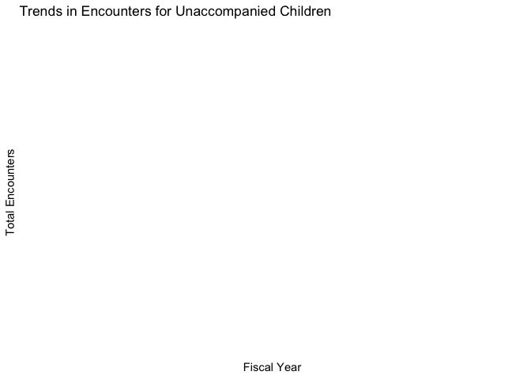

The goal of cbp.analysis is to analyzes U.S. Customs and Border Protection (CBP) data.Through the analysis of cbp_resp data, we found significant differences in the distribution of different demographic characteristics (such as family unit members (FMUA), unaccompanied children (UC)) in border encounters.
Installation
You can install the development version of cbp.analysis like so:
remotes::install_github("ETC5523-2024/supplementary-assignment-Qiuyuan0055")Example
This is a basic example which shows you how to solve a common problem: Example: Exploring Trends in Border Encounters by Demographic
library(cbp.analysis)
# Load the package
library(cbp.analysis)
# Load the dataset
data("cbp_resp", package = "cbp.analysis")
# Filter data for "Unaccompanied Children"
uc_data <- cbp_resp[cbp_resp$demographic == "Unaccompanied Children", ]
# Summarize total encounters by fiscal year
library(dplyr)
#>
#> Attaching package: 'dplyr'
#> The following objects are masked from 'package:stats':
#>
#> filter, lag
#> The following objects are masked from 'package:base':
#>
#> intersect, setdiff, setequal, union
uc_summary <- uc_data %>%
group_by(fiscal_year) %>%
summarise(total_encounters = sum(encounter_count, na.rm = TRUE))
# Visualize the trend
library(ggplot2)
ggplot(uc_summary, aes(x = fiscal_year, y = total_encounters)) +
geom_line(color = "blue", size = 1) +
geom_point(size = 2) +
theme_minimal() +
labs(
title = "Trends in Encounters for Unaccompanied Children",
x = "Fiscal Year",
y = "Total Encounters"
)
#> Warning: Using `size` aesthetic for lines was deprecated in ggplot2 3.4.0.
#> ℹ Please use `linewidth` instead.
#> This warning is displayed once every 8 hours.
#> Call `lifecycle::last_lifecycle_warnings()` to see where this warning was
#> generated. # Result
# Result
data("cbp_resp", package = "cbp.analysis")
uc_data <- cbp_resp[cbp_resp$demographic == "Unaccompanied Children", ]
uc_summary <- uc_data %>%
group_by(fiscal_year) %>%
summarise(total_encounters = sum(encounter_count, na.rm = TRUE))
ggplot(uc_summary, aes(x = fiscal_year, y = total_encounters)) +
geom_line(color = "blue", size = 1) +
geom_point(size = 2) +
theme_minimal() +
labs(
title = "Trends in Encounters for Unaccompanied Children",
x = "Fiscal Year",
y = "Total Encounters"
) 1.This example solves a common problem: how to analyze annual trends by specific demographic categories. 2. The data were filtered and summarized through filter and group_by, clearly showing the changing trend of the target population. 3. The generated graph shows the total number of encounters per fiscal year, and users can further infer trends and potential causes based on the data. For more details about the package, please visithere